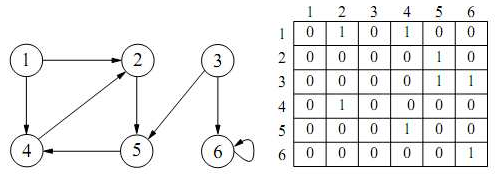
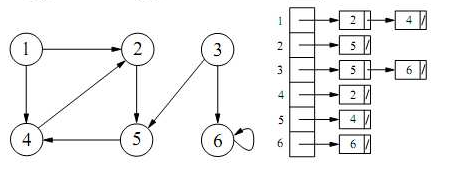

Estructuras de Datos y Algoritmos II
Clase 3
Grafos
versión imprimibleGrafos
Es un conjunto de objetos llamados vértices o nodos unidos por enlaces llamados aristas o arcos, que permiten representar relaciones binarias entre elementos de un conjunto.
un Grafo(V,E)
V es un conjunto de vértices o nodos, con una relación entre ellos;
E es un conjunto de pares (u,v) donde u,v Є V llamados aristas o arcos.
Tipos de grafo
Grafo dirigido
la relación sobre V no es simétrica. Arista -> par ordenado (u,v)Grafo no dirigido
la relación sobre V es simétrica. Arista -> par no ordenado {u,v}, u,v Є V y u ≠ vGrafo pesado
(o con costos)Las aristas tiene además un valor que representa su peso
Terminología
Grado
de un grafo
máximo grado de sus vérticesde un vértice
número de aristas que inciden el el vértice¿En un grafo dirigido?
2 grados diferenciados:- grado de entrada
- grado de salida
Nodo adyacencente
v es adyacente a u si existe una arista (u,v) Є E.
en un grafo no dirigido, {u,v} Є E incide en los nodos u y v.
en un grafo dirigido, (u,v) Є E incide en v, y parte de u.
Nodo alcanzable
v es alcanzable desde u, si existe un camino de u a v.
Caminos
un camino de u a v, es una secuencia de vértices que comienza en u, termina en v y cada uno de los vértices intermedios es adyacente al anterior
Longitud de un camino
cantidad de aristas en el caminoCamino Simple
Camino en el que todos sus vertices son distintos (excepto quizás el primero y el último)Ciclo
Camino donde el primer y el último nodo son el mismoSi el camino es simple, el ciclo es simple
Bucle
Ciclo de longitud 1Grafo Acíclico
Grafo que no contiene ciclos
Conexo
Un grafo es conexo si cualquier nodo es alcanzables desde cualquier otro
es decir entre cada dos nodos hay un camino
Bosque
Es un bosque es un grafo sin ciclos.Árbol Libre
Un árbol libre es un bosque conexo.Árbol
Es un árbol libre en el que un nodo se ha designado como raíz.implementaciones
Matriz de adyacencia
Lista de adyacentes
matriz de adyacencia
matriz de adyacencia
Complejidad espacial:
O (|V| 2 )
Representación es útil para grafos con número de vértices pequeño, o grafos densos (|E|≈|V|×|V|)Comprobar si una arista (u,v) pertenece a E => consultar posición A(u,v)
Complejidad Temporal
T(|V|,|E|) = O(1)lista de adyacentes
lista de adyacentes
Representación apropiada para grafos con |E| menor que |V| 2
Complejidad Espacial
O (|V|+|E|) (sea dirigido o no)Si G es dirigido, la suma de las longitudes de las listas de adyacencia será |E|.
Si G es no dirigido, la suma de las longitudes de las listas de adyacencia será 2|E|.
Desventaja: si se quiere comprobar si una arista (u,v) pertenece a E ⇒ buscar v en la lista de adyacencia de u.
Complejidad Temporal
T (|V|,|E|) será O (Grado G) ⊆ O (|V|).Recorridos
BFS
DFS

DFS
Depth First Search o Recorrido en Profundidad
comparemos con el recorrido de árbolesDFS
marcar todos los nodos como no visitados
u = un vertice no visitado
3. marcar u como vistado
4. procesar u
5. para cada vertice v adyacente a u:
6. si v no está visitado:
7. ejecutar recursivamente 3,4,5 para v
8. Si quedaron nodos sin visitar:
9. repetir desde 2 con un nuevo vertice no visitado
BFS
Breadth First Search o Recorrido en Amplitud
comparemos con el recorrido de árbolesBFS
marcar todos los nodos como no visitados
u = un vertice no visitado
encolar u
marcar u como vistado
mientras haya vertices:
desencolo un vertice u
proceso u
para cada nodo v adyacente a u:
si v no está visitado:
encolar v
marcar v como visitado
si quedan nodos sin visitar, tomo uno y vuelvo a empezar
Algoritmos
Problema
El Camino Más Corto
Grafo no dirigido sin pesos
def min_path(G, s):
tabla = inicializar_tabla
c = Cola.new
c.push(s)
tabla[s]['conocido'] = true
while(!q.empty):
v = q.pop()
tabla[v]['conocido'] = true
for u in v.adyacentes():
if ! tabla[u]['conocido']:
tabla[u]['distancia']=tabla[u]['distancia'] + 1
tabla[u]['paso'] = v
q.push(v)
tabla[v]['conocido'] = true
Dijkstra
para grafos dirigidos con pesos postivosDijkstra
Tabla
para cada vertice almacena:- distancia:
- distancia mínima desde el origen (inicialmente infinita para todos lo vértices excepto el origen con valor 0)
- paso:
- último vértice por donde pasó para llegar al vertice actual
- conocido:
- booleano que indica si el vertice ya está procesado (inicialmente todos en 0)
Dijkstra
def dijkstra(G, s):
tabla = inicializar_tabla
tabla[s]['distancia'] = 0
for v in G.vertices():
u = buscar_vertice_desconocido_con_menor_distancia
tabla[u]['conocido'] = true
for w in u.adyacentes():
if !tabla[w]['conocido']:
if tabla[w]['dist'] > tabla[u]['dist'] + u.peso(w)
tabla[w]['dist'] = tabla[u]['dist'] + u.peso(w)
tabla[u]['paso'] = u
Se compara la distancia de s a w (sin pasar por v ) vs la Distancia de s a w, pasando por v
Floyd
Calcula los caminos mínimos entre todos los pares de verticesFloyd
utiliza 2 matrices (D y P) de V x V
D : matriz de costos mínimosP : matriz de vertices intermedios
Floyd
def floyd(G, s):
D = inicializar_matriz_distancias
P = inicializar_matriz_pasos
for k in G.vertices().lenght():
for i in G.vertices().lenght():
for j in G.vertices().lenght():
if D[i,j] > D[i,k] + D[k,j]:
D[i,j] = D[i,k] + D[k,j]
P[i,j] = k